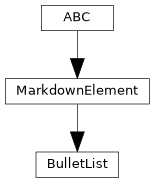
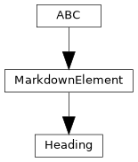
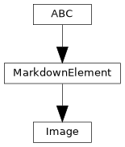
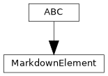
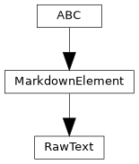
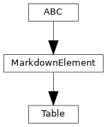

pyTRLCConverter.markdown.element
Markdown block elements. Each element renders itself into a Markdown string. Elements are collected by the MarkdownDocument and rendered once when the output file is written.
Author: Andreas Merkle (andreas.merkle@newtec.de)
Classes
Unordered Markdown list block element. |
|
Markdown heading block element. |
|
Markdown image / diagram link block element. |
|
Abstract base class for Markdown block elements. |
|
Raw Markdown text block element passed through unchanged. |
|
Markdown table block element. |
Module Contents
- class pyTRLCConverter.markdown.element.BulletList(values: List[str], escape: bool = True)[source]
Bases:
MarkdownElement
Unordered Markdown list block element.
- render() str[source]
Render the unordered list. The values will be automatically escaped for Markdown if necessary.
- Returns:
Markdown list
- Return type:
str
- _escape = True
- _values
- class pyTRLCConverter.markdown.element.Heading(text: str, level: int, escape: bool = True)[source]
Bases:
MarkdownElement
Markdown heading block element.
- render() str[source]
Render the heading. The text will be automatically escaped for Markdown if necessary.
- Returns:
Markdown heading
- Return type:
str
- _escape = True
- _level
- _text
- class pyTRLCConverter.markdown.element.Image(file_name: str, caption: str, escape: bool = True)[source]
Bases:
MarkdownElement
Markdown image / diagram link block element.
- render() str[source]
Render the image link. The caption will be automatically escaped for Markdown if necessary.
- Returns:
Markdown diagram link
- Return type:
str
- _caption
- _escape = True
- _file_name
- class pyTRLCConverter.markdown.element.MarkdownElement[source]
Bases:
abc.ABC
Abstract base class for Markdown block elements.
- class pyTRLCConverter.markdown.element.RawText(text: str)[source]
Bases:
MarkdownElement
Raw Markdown text block element passed through unchanged.
- _text
- class pyTRLCConverter.markdown.element.Table(column_titles: List[str], rows: List[List[str]])[source]
Bases:
MarkdownElement
Markdown table block element. Rendered as HTML to support multi-line cells and other complex content.
- _column_titles
- _rows